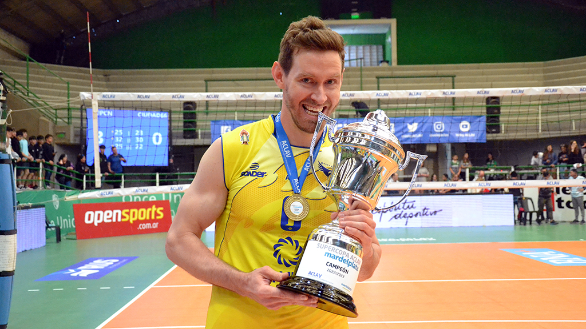

Cristian Poglajen, medallista olímpico en los Juegos Olímpicos de Tokio, está totalmente adaptado a San Juan. Y si bien ya dio su primera vuelta de coronación en la Supercopa, este jueves será especial porque volverá a jugar Liga en Argentina luego de seis años. El receptor punta de UPCN San Juan Vóley habló en la previa del debut en la LVA RUS en el Tour 1 en Buenos Aires y se mostró ilusionado. “Estoy contento de poder debutar en la Liga después de tanto tiempo. Tuvimos una preparación física bastante larga y, aunque dimos el primer paso con la Supercopa, sabemos que eso quedó en el pasado y que ahora tenemos un objetivo nuevo que es la LVA RUS”, indicó el Polaco, quien en la pasada temporada jugó en Francia. “Creo que todos los equipos nos van a querer ganar. UPCN tiene esa presión de que todos los equipos le juegan al cien por ciento, pero también sabemos que dependemos mucho de nuestro juego, de lo que logremos imponer desde el saque, el bloqueo, la defensa, en definitiva en todos los rubros. Las cosas las estamos haciendo bien, pero por supuesto falta recorrer un camino muy largo”, añadió el receptor punta. Poglajen tiene una amplia experiencia y trayectoria. Surgido en Vélez, en la última temporada estuvo en el Stade Poitevin Poitiers de la Liga de Francia. Antes compitió en Turquía, primero en Ankara y luego en Afyon Belediye Yüntas. En Italia jugó en Ravenna y en Brasil lo hizo en Montes Claros y Sao Jose, a la vez que también militó en el vóley polaco, en Effector Kielce, y en el de Bélgica, en Knack Roeselare. En Argentina disputó Liga, entre otros, tanto para Sarmiento Santana Textiles como para Lomas Voley, éste último en la temporada 2016/17. Ahora, con UPCN se emociona con el retorno a la máxima competición argentina. “Estamos preparados para todos los desafíos que se vienen, con mucho entusiasmo de poder debutar en Buenos Aires de forma positiva e intentando siempre sumar en cada partido”, aseguró el Polaco.
